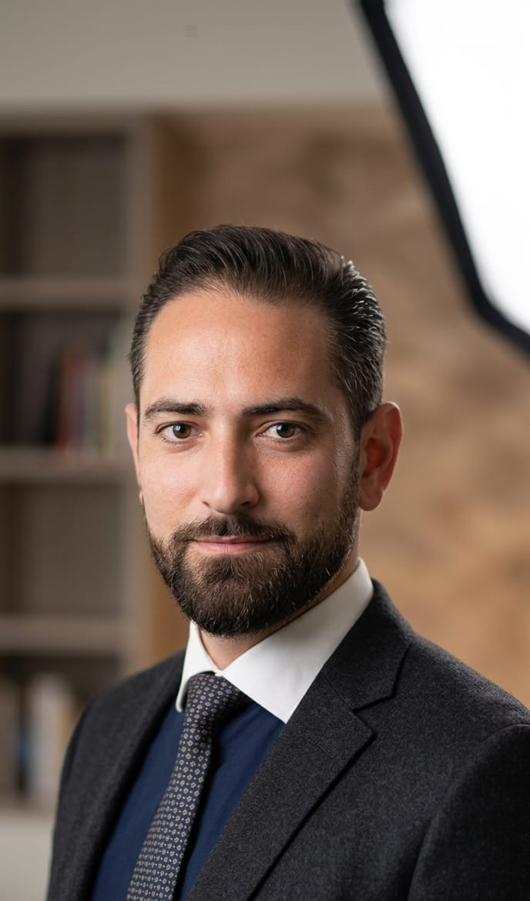

Quentin DEVESA
Consultant IA et cybersécurité indépendant. J'accompagne les dirigeants de PME et ETI françaises dans l'adoption d'une intelligence artificielle utile, sécurisée et mesurable.
Toulouse · Occitanie · France entière
Mon approche en une phrase
La méthode avant l'outil, la mesure avant la promesse, l'autonomie avant la dépendance.
L'IA générative est puissante mais bruyante. La majorité des projets que je rencontre en mission ont été lancés sur un effet d'annonce : un outil acheté avant d'avoir cadré le problème, une équipe formée sans cas d'usage clair, des données envoyées dans le cloud sans analyse de risque. Mon métier consiste à inverser cet ordre.
Parcours
Mon parcours croise cybersécurité, ingénierie système et accompagnement métier. Avant de fonder ACCESSIA Pro, j'ai travaillé sur des sujets de protection des données, d'administration d'infrastructures et de gouvernance de l'information. Cette double culture sécurité / opérationnel est ce qui me permet aujourd'hui d'évaluer rapidement les risques d'un projet IA et de proposer des solutions qui tiennent dans la durée.
Je suis basé à Toulouse depuis plusieurs années. La proximité avec l'écosystème Aerospace Valley, la French Tech Toulouse et les nombreuses PME sous-traitantes de la filière aéronautique m'a donné une expérience concrète des contraintes documentaires, qualité et conformité que rencontrent les structures industrielles régionales.
Pourquoi ACCESSIA Pro
J'ai créé ACCESSIA Pro pour proposer aux PME un accompagnement IA qui ne soit ni un cours théorique, ni la vente d'un outil propriétaire. Mon engagement : chaque mission produit un livrable concret, mesurable, exploitable même si vous décidez de ne pas continuer avec moi. Pas de marketing, pas de jargon, pas de dépendance imposée.
Domaines d'expertise
- Diagnostic IA dirigeant — cartographie des processus, identification des cas d'usage à fort ROI, feuille de route exploitable.
- Automatisation utile — déploiement de cas d'usage cadrés : assistant documentaire, traitement d'emails, génération de devis, support client augmenté.
- Sécurité et conformité — analyse RGPD, AI Act, cartographie des données sensibles, choix d'outils souverains ou auto-hébergés.
- Formation pratique — sessions courtes et opérationnelles pour les équipes métier, pas de PowerPoint long.
- Open source et auto-hébergement — Ollama, vLLM, LocalAI, solutions Mistral pour les structures soumises à des contraintes de souveraineté.
Conviction
L'IA générative ne remplace pas les équipes. Elle leur retire les tâches répétitives qui empêchent de faire le travail à forte valeur. Dans une PME, un projet IA réussi se reconnaît à un signe simple : les gens ont retrouvé du temps pour réfléchir, décider, et faire ce qu'aucun logiciel ne saura faire à leur place.
L'objectif n'est jamais de "déployer l'IA". L'objectif est de gagner du temps utile, sans exposer vos données, sans transformer votre entreprise en client captif d'un éditeur.
Vous souhaitez en discuter ?
Le premier échange est gratuit. 30 minutes pour comprendre votre activité, identifier ce qui mérite d'être automatisé et écarter les fausses bonnes idées.